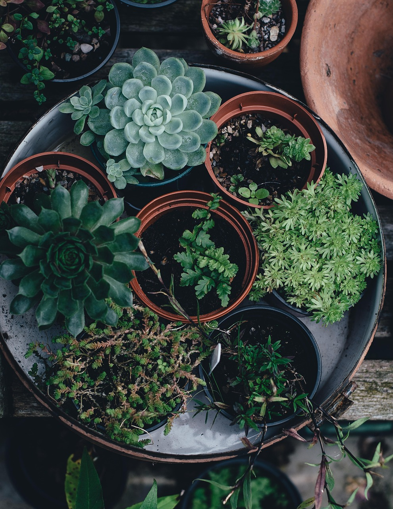

Prezentarea Magazinului
Vă mulțumim că ne vizitați site-ul. Aici găsiți cele mai de calitate semințe, plante, arbuști și flori care sunt livrate online, sau pot fi cumparate fizic.
Puteți găsi produsele ideale pentru dumneavoastră domiciliu, cu ajutorul ofertei noastre de livrare a produselor prin curier.
“Don't judge each day by the harvest you reap but by the seeds that you plant.”
